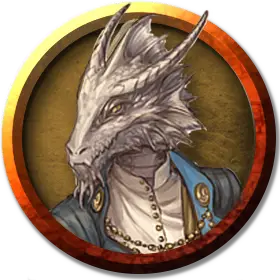

Монах лазутчик
Monastic Infiltrator
Маленький или Средний Гуманоид (Монах), любое мировоззрение

Класс Доспеха 18 (защита без доспехов)
Хиты 112 (15к8 + 45)
Скорость 50 футов
| мод | спас | ||
|---|---|---|---|
| СИЛ | 13 | +1 | +1 |
| ЛОВ | 20 | +5 | +8 |
| ТЕЛ | 16 | +3 | +3 |
| мод | спас | ||
|---|---|---|---|
| ИНТ | 15 | +2 | +2 |
| МДР | 17 | +3 | +6 |
| ХАР | 16 | +3 | +3 |
Навыки Акробатика +8, Восприятие +6, Обман +9, Скрытность +11
Сопротивление урону психическая энергия
Иммунитет к состояниям очарование
Чувства пассивное Восприятие 16
Языки Общий
Опасность 6 (2300 опыта)
Бонус мастерства +3
Особенности
Языки. Знает Общий и ещё три языка.
Защита без доспехов. Пока лазутчик не носит ни доспехи, ни щит, к КД прибавляется его модификатор Мудрости.
Защищённый разум. Заклинания и другие эффекты не позволяют другим существам читать мысли лазутчика или определять, лжёт ли он. Существа могут телепатически общаться с лазутчиком только если он позволяет это.
Действия
Мультиатака. Лазутчик совершает три безоружных удара.
Безоружный удар. Рукопашная атака оружием: +8 к попаданию, досягаемость 5 футов, одна цель. Попадание: 10 (1к10 + 5) урона силовым полем.
Использование заклинаний. Лазутчик может накладывать следующие заклинания, используя Мудрость в качестве базовой характеристики (Сл спасброска от заклинания 14):
• Неограниченно: маскировка [disguise self];
• 2/день каждое: обнаружение мыслей [detect thoughts], невидимость [invisibility];
• 1/день каждое: переносящая дверь [dimension door], область истины [zone of truth].
Бонусные действия
Хитрое действие. Лазутчик совершает действие Рывок или Отход.
Реакции
Ответный удар. Когда существо в пределах 5 футов от лазутчика попадает или промахивается по лазутчику рукопашной атакой, лазутчик наносит один безоружный удар по атакующему.
Описание
Лазутчики действуют как шпионы, диверсанты и исполнители других секретных заданий. Они изучают магические приемы, которые повышают их мастерство в бою и помогают им выполнять свои задания.
Монахи кобальтовой души
Ученые, священники и послушники, привлеченные к проблеме постижения истины и знаний, проводят свою жизнь в поддержке Библиотеки Кобальтовой души, объединенной учением Знающей Наставницы Айюн. Кобальтовые души руководствуются главным убеждением в том, что истинная сила приходит от понимания окружающего мира. Помимо своих усилий в поиске знаний, каждое ответвление Кобальтовой души стремится разоблачать ложь, разоблачать пропаганду и бороться с коррупцией в любом обществе, которое их отделение, называемое архивом, называет домом.
Штаб-квартира Библиотеки Кобальтовой души находится в Рексентруме, столице Двендалийской империи на континенте Дикогорье. У организации есть архивы по всей Экзандрии. Анк'Харелийская ветвь Кобальтовой души базируется в Храме Наставницы. Как и многие архивы, Храм Наставника - это одновременно и обширная библиотека, и святилище Айюн. Этим маркетским архивом руководит верховный куратор Джамиль А'Алития.